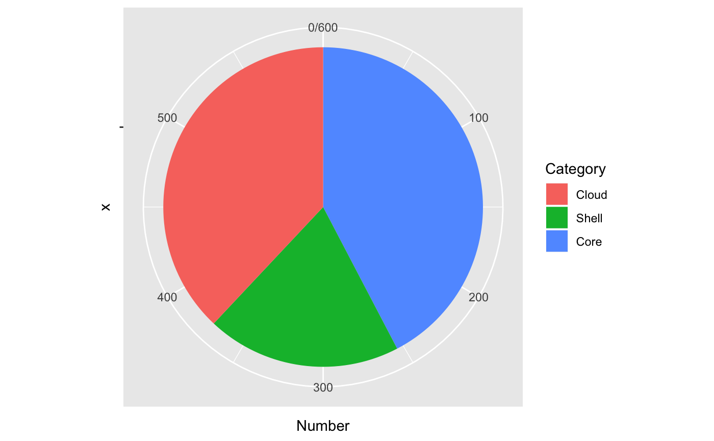
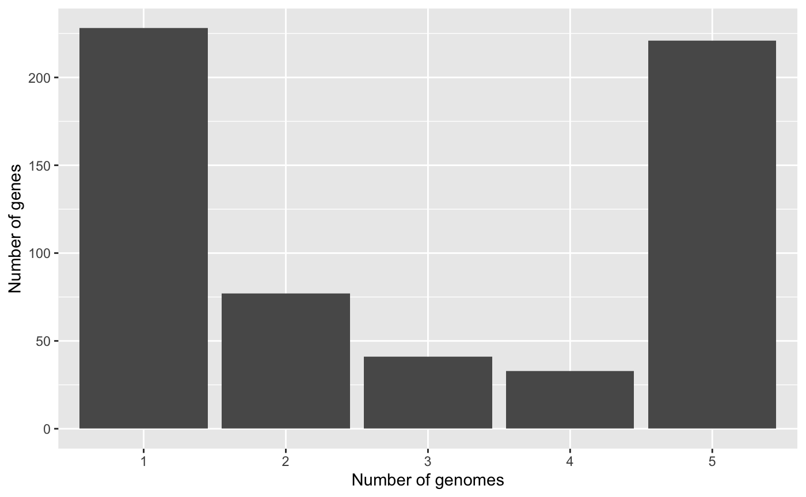
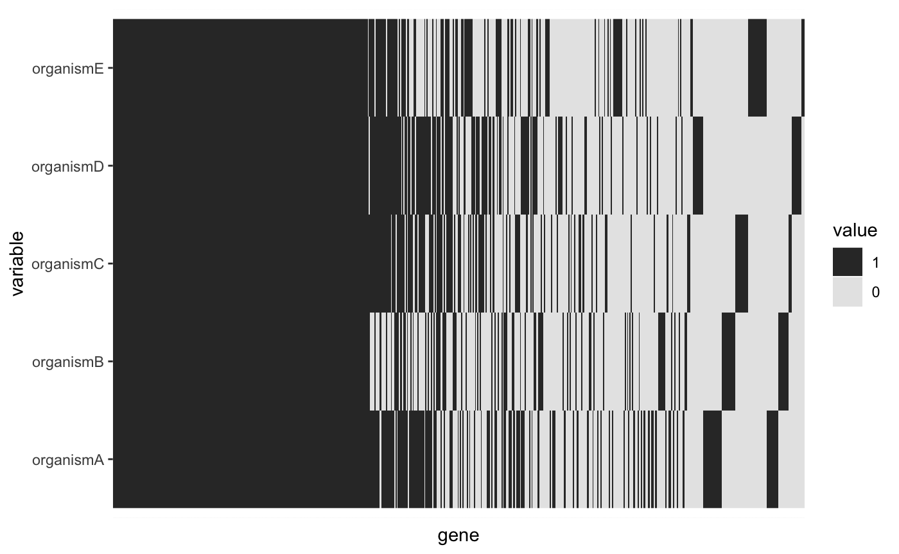
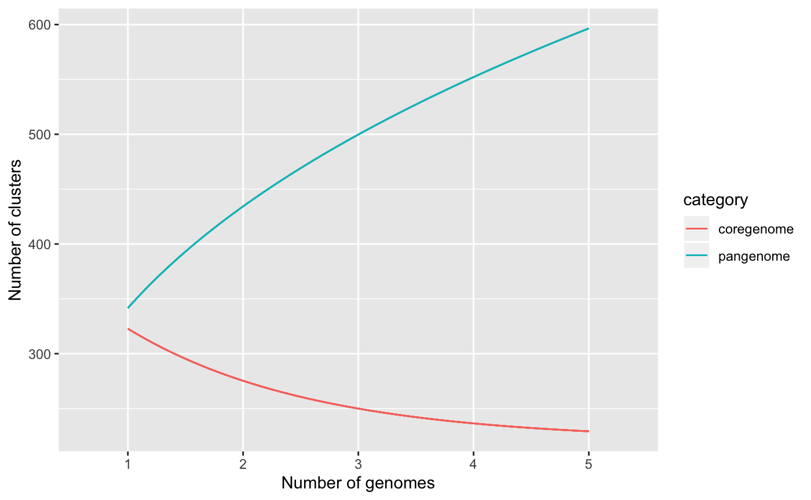
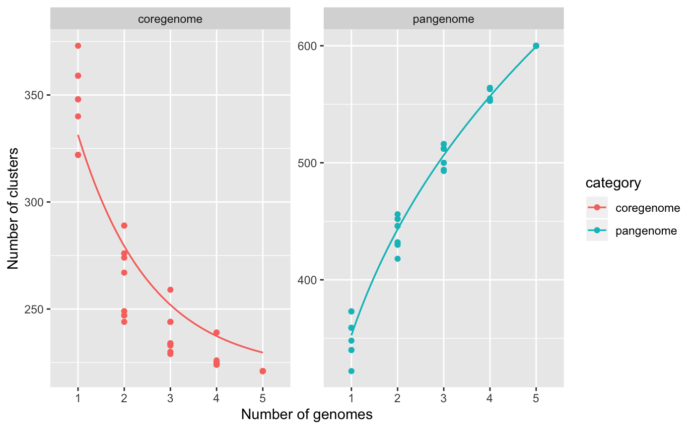

Introduction.Rmdpagoo is an encapsulated, object-oriented class system for analyzing bacterial pangenomes. It uses the R6 package as backend. It was designed in order to facilitate and speed-up the comparative analysis of multiple bacterial genomes, standardizing and optimizing routine tasks performed everyday. There are a handful of things done everyday when working with bacterial pangenomes: subset, summarize, extract, visualize and store data. So, pagoo is intended to facilitate these tasks as much as possible. pagoo is composed by three R6 classes, each one more complex than the other, and that the more basic are inherited by the more complex ones. The most basic one, PgR6, contains basic subset methods and data manipulation functions. The second one, PgR6M inherits all the methods and fields from the previous one, and incorporates statistical and visualization methods. The last one, PgR6MS, inherits from PgR6M all its capabilities, and adds methods to manipulate DNA sequences.
Pagoo works over the pangenome after it has been built with any pangenome reconstruction software. So, you can do it with the software of your preference. Despite we recommend Pewit, our own pangenome reconstruction software, pagoo can read-in the output of most popular and state-of-the-art pangenome softwares like Roary, Panaroo, panX and PIRATE. pagoo also runs a Shinny application that provides reactive interaction with the data and facillitates handling and visualization.
Currently, pagoo is only available at GitHub. The easiest way to install this package is by using devtools:
rq <- require(devtools)
if (!rq) install.packages("devtools")
devtools::install_github('iferres/pagoo')We have tested pagoo in UNIX operating systems. However it should, we cannot warrant it fully works on Windows. Also, in the future we plan to put the code in CRAN and/or Bioconductor repositries.
All three classes are documented. You can access R help pages as with any other function:
but as R6 classes documentation is still not standarized, we recomend you to use the pagoo::pagoo() function to read the documentation from, and to to use it also instead of the raw classes.
To show the full capabilities of pagoo I will use the most complex class, PgR6MS so you can see all the fancy things you can do. The example uses toy data that comes with the package.
First of all, lets extract and decompress the example data attached to this package:
## Loading required package: S4Vectors## Warning: package 'S4Vectors' was built under R version 3.6.1## Loading required package: stats4## Loading required package: BiocGenerics## Warning: package 'BiocGenerics' was built under R version 3.6.1## Loading required package: parallel##
## Attaching package: 'BiocGenerics'## The following objects are masked from 'package:parallel':
##
## clusterApply, clusterApplyLB, clusterCall, clusterEvalQ,
## clusterExport, clusterMap, parApply, parCapply, parLapply,
## parLapplyLB, parRapply, parSapply, parSapplyLB## The following objects are masked from 'package:stats':
##
## IQR, mad, sd, var, xtabs## The following objects are masked from 'package:base':
##
## anyDuplicated, append, as.data.frame, basename, cbind, colnames,
## dirname, do.call, duplicated, eval, evalq, Filter, Find, get, grep,
## grepl, intersect, is.unsorted, lapply, Map, mapply, match, mget,
## order, paste, pmax, pmax.int, pmin, pmin.int, Position, rank,
## rbind, Reduce, rownames, sapply, setdiff, sort, table, tapply,
## union, unique, unsplit, which, which.max, which.min##
## Attaching package: 'S4Vectors'## The following object is masked from 'package:base':
##
## expand.grid## Loading required package: Biostrings## Loading required package: IRanges## Warning: package 'IRanges' was built under R version 3.6.1## Loading required package: XVector## Warning: multiple methods tables found for 'type'##
## Attaching package: 'Biostrings'## The following object is masked from 'package:BiocGenerics':
##
## type## The following object is masked from 'package:base':
##
## strsplit## Loading required package: ggplot2## Loading required package: shiny## Warning in .recacheSubclasses(def@className, def, env): undefined subclass
## "UnstitchedIPos" of class "IRanges_OR_IPos"; definition not updated## Warning in .recacheSubclasses(def@className, def, env): undefined subclass
## "StitchedIPos" of class "IRanges_OR_IPos"; definition not updated## Warning: no function found corresponding to methods exports from 'GenomicRanges'
## for: 'FactorToClass'## Registered S3 method overwritten by 'seriation':
## method from
## reorder.hclust gclus## Registered S3 methods overwritten by 'vegan':
## method from
## reorder.hclust seriation
## rev.hclust dendextendtgz <- system.file('extdata', 'toy_data.tar.gz', package = 'pagoo')
untar(tarfile = tgz, exdir = tempdir())
files <- list.files(path = tempdir(), full.names = TRUE, pattern = 'tsv$|fasta$')
files## [1] "/var/folders/cq/v60_yqxs0qjg01c2n2f6yc2w0000gn/T//RtmpMihatM/case_clusters_meta.tsv"
## [2] "/var/folders/cq/v60_yqxs0qjg01c2n2f6yc2w0000gn/T//RtmpMihatM/case_df.tsv"
## [3] "/var/folders/cq/v60_yqxs0qjg01c2n2f6yc2w0000gn/T//RtmpMihatM/case_orgs_meta.tsv"
## [4] "/var/folders/cq/v60_yqxs0qjg01c2n2f6yc2w0000gn/T//RtmpMihatM/organismA.fasta"
## [5] "/var/folders/cq/v60_yqxs0qjg01c2n2f6yc2w0000gn/T//RtmpMihatM/organismB.fasta"
## [6] "/var/folders/cq/v60_yqxs0qjg01c2n2f6yc2w0000gn/T//RtmpMihatM/organismC.fasta"
## [7] "/var/folders/cq/v60_yqxs0qjg01c2n2f6yc2w0000gn/T//RtmpMihatM/organismD.fasta"
## [8] "/var/folders/cq/v60_yqxs0qjg01c2n2f6yc2w0000gn/T//RtmpMihatM/organismE.fasta"There are 3 .tsv files, and 5 .fasta files. The case_df.tsv file is the main one, having the information about the membership of each gene from each organism, to each group of orthologous (clusters). case_*_meta.tsv files have metadata for the clusters and for the organisms. organism*.fasta files have the sequences for each organism:
data_file <- grep("case_df.tsv", files, value = TRUE)
df <- read.table(data_file, header = TRUE, sep = '\t', quote = '')
head(df)## gene org cluster annot
## 1 gene081 organismA OG001 Thioesterase superfamily protein
## 2 gene122 organismB OG001 Thioesterase superfamily
## 3 gene299 organismC OG001 Thioesterase superfamily protein
## 4 gene186 organismD OG001 Thioesterase superfamily protein
## 5 gene076 organismE OG001 Thioesterase superfamily
## 6 gene352 organismA OG002 Inherit from proNOG: ThioesteraseAs you can see, df is a data.frame with 4 columns: the first one with the name of each gene, the second one with the organism to which each gene belongs, the third one with the cluster to which each gene was assigned in the pangenome reconstruction, and the last one with annotation metadata for each gene. Of the 4 columns, the former 3 are required, and pagoo will look for columns named “gene”, “org”, and “group”. More columns are optional, and you can add as many as you want (or none) to add metadata of each gene.
The next 2 .tsv files contains metadata for each cluster and for each organism, respectively, and are optional arguments.
#
clust_file <- grep("case_clusters_meta.tsv", files, value = TRUE)
group_meta <- read.table(clust_file, header = TRUE, sep = '\t', quote = '', na.strings = '<NA>')
orgs_file <- grep("case_orgs_meta.tsv", files, value = TRUE)
org_meta <- read.table(orgs_file, header = TRUE, sep = '\t', quote = '', na.strings = '<NA>')
head(group_meta)## cluster kegg cog
## 1 OG001 NA S
## 2 OG002 NA S
## 3 OG003 NA NA
## 4 OG004 NA D
## 5 OG005 K01990 V
## 6 OG006 NA V## org sero country
## 1 organismA a Westeros
## 2 organismB b Westeros
## 3 organismC c Westeros
## 4 organismD a Essos
## 5 organismE b EssosIn both cases, the columns identifying each cluster and each organism must coincide with the names provided in the first data frame, so pagoo can map the metadata correctly.
As we will be working with the class PgR6MS in this example, DNA sequences are also required. The other 2 classes are lightweight, and don’t use all this data, so keep it in mind you can work without sequences if you have limited computational resources.
suppressMessages(library(Biostrings))
fasta_files <- grep("[.]fasta", files, value = TRUE)
names(fasta_files) <- sub('[.]fasta', '', basename(fasta_files))
# A list of DNAStringSet, with organism names as list names, and DNAString names as gene names:
seqs <- lapply(fasta_files, readDNAStringSet)Keep in mind that names should match with those provided in the data frames before.
Once we have all the input data, lets load the example into a PgR6MS class:
## Checking class.## Checking dimnames.## Creating gid (gene ids).## Checking provided organism metadata.## Checking provided cluster metadata.## Creating panmatrix.## Populating class.## Checking input sequences.## Checking that sequence names matches with DataFrame.## Adding metadata to sequences.## <PgR6MS>
## Inherits from: <PgR6M>
## Public:
## add_metadata: function (map = "org", data)
## binomix_estimate: function (K.range = 3:5, core.detect.prob = 1, verbose = TRUE)
## cg_exp_decay_fit: function (raref, pcounts = 10, ...)
## clone: function (deep = FALSE)
## cloud_clusters: active binding
## cloud_genes: active binding
## cloud_sequences: active binding
## clusters: active binding
## core_clusters: active binding
## core_genes: active binding
## core_level: active binding
## core_seqs_4_phylo: function (max_per_org = 1, fill = TRUE)
## core_sequences: active binding
## dist: function (method = "bray", binary = FALSE, diag = FALSE, upper = FALSE,
## drop: function (x)
## dropped: active binding
## fluidity: function (n.sim = 10)
## genes: active binding
## gg_barplot: function ()
## gg_binmap: function ()
## gg_curves: function (what = c("pangenome", "coregenome"), ...)
## gg_dist: function (method = "bray", ...)
## gg_pca: function (colour = NULL, ...)
## gg_pie: function ()
## initialize: function (data, org_meta, cluster_meta, core_level = 95, sep = "__",
## organisms: active binding
## pan_matrix: active binding
## pan_pca: function (center = TRUE, scale. = FALSE, ...)
## pg_power_law_fit: function (raref, ...)
## random_seed: active binding
## rarefact: function (what = "pangenome", n.perm = 10)
## recover: function (x)
## runShinyApp: function ()
## save_pangenomeRDS: function (file = "pangenome.rds", seqs.if.avail = TRUE)
## sequences: active binding
## shell_clusters: active binding
## shell_genes: active binding
## shell_sequences: active binding
## summary_stats: active binding
## write_pangenome: function (dir = "pangenome", force = FALSE)
## Private:
## .clusters: DataFrame
## .data: DataFrame
## .dropped: NULL
## .level: 95
## .organisms: DataFrame
## .panmatrix: 1 1 1 1 1 1 1 1 1 0 1 0 1 1 0 1 1 1 1 1 1 1 1 1 1 1 1 1 ...
## .sep: __
## .sequences: DNAStringSet
## version: package_version, numeric_versionWow. I know. A better print method will be written in the future, this is the default print method for R6 classes. But you can see that basically there are public and private fields/methods. In private, all raw data is stored. You will not have easy access to it. Instead, you will be able to access public functions and active bindings. Active bindings are functions that behave as it were variables, you will understand it better with some examples below.
What do you want from a pangenome? Well, let see some examples:
## OG001 OG002 OG003 OG004 OG005
## organismA 1 1 1 1 1
## organismB 1 1 0 1 1
## organismC 1 1 1 1 1
## organismD 1 1 1 1 1
## organismE 1 0 0 1 1## DataFrame with 5 rows and 3 columns
## org sero country
## <factor> <factor> <factor>
## 1 organismA a Westeros
## 2 organismB b Westeros
## 3 organismC c Westeros
## 4 organismD a Essos
## 5 organismE b Essos## DataFrame with 600 rows and 3 columns
## cluster kegg cog
## <character> <factor> <factor>
## 1 OG001 NA S
## 2 OG002 NA S
## 3 OG003 NA NA
## 4 OG004 NA D
## 5 OG005 K01990 V
## ... ... ... ...
## 596 OG596 NA L
## 597 OG597 NA H
## 598 OG598 NA S
## 599 OG599 NA NA
## 600 OG600 NA NA## SplitDataFrameList of length 600
## $OG001
## DataFrame with 5 rows and 5 columns
## cluster org gene gid
## <factor> <factor> <factor> <character>
## 1 OG001 organismA gene081 organismA__gene081
## 2 OG001 organismB gene122 organismB__gene122
## 3 OG001 organismC gene299 organismC__gene299
## 4 OG001 organismD gene186 organismD__gene186
## 5 OG001 organismE gene076 organismE__gene076
## annot
## <factor>
## 1 Thioesterase superfamily protein
## 2 Thioesterase superfamily
## 3 Thioesterase superfamily protein
## 4 Thioesterase superfamily protein
## 5 Thioesterase superfamily
##
## $OG002
## DataFrame with 4 rows and 5 columns
## cluster org gene gid
## <factor> <factor> <factor> <character>
## 1 OG002 organismA gene352 organismA__gene352
## 2 OG002 organismB gene145 organismB__gene145
## 3 OG002 organismC gene251 organismC__gene251
## 4 OG002 organismD gene299 organismD__gene299
## annot
## <factor>
## 1 Inherit from proNOG: Thioesterase
## 2 Inherit from proNOG: Thioesterase
## 3 Inherit from proNOG: Thioesterase
## 4 Inherit from proNOG: Thioesterase
##
## $OG003
## DataFrame with 3 rows and 5 columns
## cluster org gene gid annot
## <factor> <factor> <factor> <character> <factor>
## 1 OG003 organismA gene359 organismA__gene359 NA
## 2 OG003 organismC gene237 organismC__gene237 NA
## 3 OG003 organismD gene069 organismD__gene069 NA
##
## ...
## <597 more elements>## DNAStringSetList of length 600
## [["OG001"]] organismA__gene081=ATGGAATCGGAAACAATCTTTCGGGAAATCAAAGCAAGCCAAAACG...
## [["OG002"]] organismA__gene352=ATGACAGATATACAGATTGAATTTCCGGAGAACTATCATTTTTCAA...
## [["OG003"]] organismA__gene359=TTGTTTTTTTATTTCACATTATGGATCACAAAAAGGATCGGTTTTC...
## [["OG004"]] organismA__gene258=ATGAAACAGATCCTCTGTATTGCAAACCAGAAAGGCGGAGTCGGTA...
## [["OG005"]] organismA__gene118=ATGATCAAAGTTAAAAACCTATCTAAATTCTATGGCAAAAAACTCG...
## [["OG006"]] organismA__gene348=GTGAGTCTGATCAAAGTAAGAAATTTGGTAAAGAATTATCATATTC...
## [["OG007"]] organismA__gene140=ATGAAGTTTTTTTTCAGACTTCTATCCTATTCCGTACATTACAAAT...
## [["OG008"]] organismB__gene075=ATGATTCAAAAAGCGAATTATAAACAGATTTTATTAGAATTTTTCT...
## [["OG009"]] organismB__gene328=ATGAATGATTATCTCACGTACGTATCTGACAATCGTTCCGTTCGAA...
## [["OG010"]] organismA__gene013=ATGAGCGAAATTGAAAGCGGTTTTTTTCAATCCGGCGGGTACAATC...
## ...
## <590 more elements>## A DNAStringSet instance of length 5
## width seq names
## [1] 576 ATGGAATCGGAAACAATCTTTCG...AACTTCAAAAGACGGATTCCTGA organismA__gene081
## [2] 576 ATGGAACCAGAGGCAATCTACCG...AACTTCAAAACATAGAACCCTAA organismB__gene122
## [3] 576 ATGGATACGGAAACGATCTACCG...AACTTCAAAAGGTAAATTCTTAA organismC__gene299
## [4] 576 ATGGAAACAGAAACAATCTACCG...AACTTCAAAAGGTAAATTCCTAG organismD__gene186
## [5] 576 ATGGAATCAGAGGCAATCTACCG...AACTTCAAAAGATAATTTCCTAG organismE__gene076# What is the default core level?
pg$core_level #You can change it by assiging another value (<=100)## [1] 95## DataFrame with 254 rows and 3 columns
## cluster kegg cog
## <character> <factor> <factor>
## 1 OG001 NA S
## 2 OG002 NA S
## 3 OG004 NA D
## 4 OG005 K01990 V
## 5 OG006 NA V
## ... ... ... ...
## 250 OG437 NA NA
## 251 OG439 NA S
## 252 OG444 NA NA
## 253 OG447 NA NA
## 254 OG454 NA L## SplitDataFrameList of length 118
## $OG003
## DataFrame with 3 rows and 5 columns
## cluster org gene gid annot
## <factor> <factor> <factor> <character> <factor>
## 1 OG003 organismA gene359 organismA__gene359 NA
## 2 OG003 organismC gene237 organismC__gene237 NA
## 3 OG003 organismD gene069 organismD__gene069 NA
##
## $OG009
## DataFrame with 2 rows and 5 columns
## cluster org gene gid annot
## <factor> <factor> <factor> <character> <factor>
## 1 OG009 organismB gene328 organismB__gene328 NA
## 2 OG009 organismE gene181 organismE__gene181 NA
##
## $OG012
## DataFrame with 3 rows and 5 columns
## cluster org gene gid annot
## <factor> <factor> <factor> <character> <factor>
## 1 OG012 organismA gene138 organismA__gene138 Alpha beta hydrolase
## 2 OG012 organismB gene025 organismB__gene025 Alpha beta hydrolase
## 3 OG012 organismE gene031 organismE__gene031 Alpha beta hydrolase
##
## ...
## <115 more elements>## DNAStringSetList of length 228
## [["OG008"]] organismB__gene075=ATGATTCAAAAAGCGAATTATAAACAGATTTTATTAGAATTTTTCT...
## [["OG024"]] organismD__gene092=TTGAAAAATTATTTGAAAAAAGAACCGAGCCATTTTGTTCCTAAAA...
## [["OG028"]] organismC__gene108=ATGAAGAAGCTCAACTTTCCATTTCATTATTTTTCTAAAACGATCT...
## [["OG030"]] organismE__gene222=ATGAAAATATCCGTTAAAACTCTTTTTTCTTTCTCCATTTTTATAC...
## [["OG033"]] organismE__gene115=TTGTTTAAAACGACTCATCCAAACGGATTGAAGAGAACTTTAACGG...
## [["OG045"]] organismE__gene241=ATGAAGAAAATTGTTAGTGTAAAACCGGAATTTGAATCTTTATCCG...
## [["OG047"]] organismE__gene001=ATGAAAGAAAAATTACCAGGTCTATTTGATTTAGTATTCCATTTTG...
## [["OG054"]] organismA__gene331=ATGTCTATTTTGATCACTGGATCTTCGGGTTTGATCGGTTCGGCTT...
## [["OG062"]] organismC__gene348=ATGGCACTTATTAATCCTCATATTAACTTCAACGGAAATGCCGAAG...
## [["OG063"]] organismA__gene257=ATGAAAATAGGACTCACGAGCGTAATCGTTCAAGATCCGATTGCGG...
## ...
## <218 more elements>## DataFrame with 4 rows and 2 columns
## Category Number
## <character> <integer>
## 1 Total 600
## 2 Core 254
## 3 Shell 118
## 4 Cloud 228Of course, you can subset each of the above fields as you would subset any other vector or list in R, but I wanted something better. Lets see a little example:
## OG001 OG002 OG003
## organismA 1 1 1
## organismB 1 1 0I want to extract those precise genes. Wouldn’t be nice to have the possibility of using the same subset notation in lists as it were a matrix? Well, you can:
## SplitDataFrameList of length 3
## $OG001
## DataFrame with 2 rows and 5 columns
## cluster org gene gid
## <factor> <factor> <factor> <character>
## 1 OG001 organismA gene081 organismA__gene081
## 2 OG001 organismB gene122 organismB__gene122
## annot
## <factor>
## 1 Thioesterase superfamily protein
## 2 Thioesterase superfamily
##
## $OG002
## DataFrame with 2 rows and 5 columns
## cluster org gene gid
## <factor> <factor> <factor> <character>
## 1 OG002 organismA gene352 organismA__gene352
## 2 OG002 organismB gene145 organismB__gene145
## annot
## <factor>
## 1 Inherit from proNOG: Thioesterase
## 2 Inherit from proNOG: Thioesterase
##
## $OG003
## DataFrame with 1 row and 5 columns
## cluster org gene gid annot
## <factor> <factor> <factor> <character> <factor>
## 1 OG003 organismA gene359 organismA__gene359 NAI’m referencing the same genes in both the panmatrix and in the list above, using the same notation. You can use it with sequences also:
## DNAStringSetList of length 3
## [["OG001"]] organismA__gene081=ATGGAATCGGAAACAATCTTTCGGGAAATCAAAGCAAGCCAAAACG...
## [["OG002"]] organismA__gene352=ATGACAGATATACAGATTGAATTTCCGGAGAACTATCATTTTTCAA...
## [["OG003"]] organismA__gene359=TTGTTTTTTTATTTCACATTATGGATCACAAAAAGGATCGGTTTTC...The default print method for DNAStringSetList (Biostrings package) is not showing what’s inside each list element, but you will check it has the precise sequences we asked for if you look inside each element.
Another tedious task I found working with microbial genomics is when you run a pangenome tool over a data set, and when you canalize it you realize that one or some of the input genomes have very bad quality, or you want to remove them from downstream analysis for any other cause. I implemented drop() and recover() functions to remove or reload particular organisms from the data set:
## OG001 OG002 OG003 OG004 OG005
## organismA 1 1 1 1 1
## organismB 1 1 0 1 1
## organismC 1 1 1 1 1
## organismD 1 1 1 1 1
## organismE 1 0 0 1 1# I want to drop organismD because blah blah
pg$drop('organismD')
# Now is was removed from the dataset
pg$pan_matrix[, 1:5]## OG001 OG002 OG003 OG004 OG005
## organismA 1 1 1 1 1
## organismB 1 1 0 1 1
## organismC 1 1 1 1 1
## organismE 1 0 0 1 1## SplitDataFrameList of length 3
## $OG001
## DataFrame with 4 rows and 5 columns
## cluster org gene gid
## <factor> <factor> <factor> <character>
## 1 OG001 organismA gene081 organismA__gene081
## 2 OG001 organismB gene122 organismB__gene122
## 3 OG001 organismC gene299 organismC__gene299
## 4 OG001 organismE gene076 organismE__gene076
## annot
## <factor>
## 1 Thioesterase superfamily protein
## 2 Thioesterase superfamily
## 3 Thioesterase superfamily protein
## 4 Thioesterase superfamily
##
## $OG002
## DataFrame with 3 rows and 5 columns
## cluster org gene gid
## <factor> <factor> <factor> <character>
## 1 OG002 organismA gene352 organismA__gene352
## 2 OG002 organismB gene145 organismB__gene145
## 3 OG002 organismC gene251 organismC__gene251
## annot
## <factor>
## 1 Inherit from proNOG: Thioesterase
## 2 Inherit from proNOG: Thioesterase
## 3 Inherit from proNOG: Thioesterase
##
## $OG003
## DataFrame with 2 rows and 5 columns
## cluster org gene gid annot
## <factor> <factor> <factor> <character> <factor>
## 1 OG003 organismA gene359 organismA__gene359 NA
## 2 OG003 organismC gene237 organismC__gene237 NA## DataFrame with 4 rows and 3 columns
## org sero country
## <factor> <factor> <factor>
## 1 organismA a Westeros
## 2 organismB b Westeros
## 3 organismC c Westeros
## 5 organismE b Essos# And summary statistics are also updated (compare with pg$summary_stats called before)
pg$summary_stats## DataFrame with 4 rows and 2 columns
## Category Number
## <character> <integer>
## 1 Total 563
## 2 Core 261
## 3 Shell 74
## 4 Cloud 228Now you want to get it back:
## 4
## "organismD"## DataFrame with 5 rows and 3 columns
## org sero country
## <factor> <factor> <factor>
## 1 organismA a Westeros
## 2 organismB b Westeros
## 3 organismC c Westeros
## 4 organismD a Essos
## 5 organismE b EssosNote that you don’t have to reassign the result of the function to a new variable, that’s R6 reference semantics magic. Use with caution.
An everyday application of using drop() and recover() is to reconstruct a pangenome including an outgroup organism for phylogenetic purposes, but discarding it for specific clade analysis which don’t require it.
Once you have a pangenome, you may want to get some statistics about it. I implemented some methods in pagoo, and take some others from widely used packages as vegan and micropan. You can contribute by adding more.
## organismA organismB organismC organismD
## organismB 0.3015428
## organismC 0.2537313 0.2927536
## organismD 0.2755906 0.3034965 0.2151556
## organismE 0.2762431 0.2821270 0.2582026 0.2617080## Mean Std
## 0.25044734 0.02812111## $formula
## function (x)
## K * x^delta
## <environment: 0x7fb723ca4c58>
##
## $params
## K delta
## 343.231117 0.344505
##
## attr(,"alpha")
## [1] 0.655495…and some others. It is worth noting that each statistic will be computed for available organisms, not taking into consideration previously dropped ones.
I used ggplot2 as backend for visualization methods. Here I’m showing some of the available.




# Customize with ggplot2
library(ggplot2)
pg$gg_curves() +
geom_point() +
facet_wrap(~category, scales = 'free_y')
I call recipes to short and easy scripts that solves a specific problem. Here I show a few to demonstrate the potentialities of pagoo, and to show how to use it with popular genomics R packages. These examples uses sequence data because I think it’s the most interesting case to work with, so assumes that you are working with a PgR6MS class, like the one in the tutorial.
You can help by expanding the following with more examples:
One standard analysis when dealing with a pangenome is to align each core cluster, concatenate them into a super alignment, and infer a phylogeny. Since core clusters might contain in-paralogs, you need to select no more than one of them on each cluster from each organism. Also, if core_level (that is, the percentage of organisms a gene has to be in, to be considered core) is set below 100%, some clusters might have few organisms missing, so you would have to fill with gaps and also not miss the sequence order before concatenating. For this purpose I wrote the core_seqs_4_phylo() function, which return something similar to core_sequences field, but with above considerations. In the following example I use phangorn package to compute and visualize a phylogenetic tree.
library(Biostrings) # DNAString xscat
library(magrittr) # %>% (pipe operator)
library(DECIPHER) # AlignSeqs()
library(phangorn) # phyDat(), dist.ml(), NJ()
lapply(pg$core_seqs_4_phylo(), AlignSeqs) %>% # Align each core cluster
do.call(xscat, .) %>% # Concatenate alignments
as('matrix') %>% # Transform to matrix
phyDat(type = 'DNA') %>% # Transform to phangorn's phyDat
dist.ml() %>% # Compute distance
NJ() %>% # Compute NJ
plot() # Plot itYou can use the rBLAST package to search a specific set of sequences on a custom blast database. In the example below, sequences are first translated, and then searched against a protein blast database. The result is returned as a data.frame for parsing and better curation.
devtools::install_github('mhahsler/rBLAST')
library(Biostrings)
library(rBLAST)
library(magrittr)
db_path <- 'path/to/custom/blastpdb'
db <- blast(db = db_path, type = 'blastp')
pg$sequences[[1]] %>% # Get DNAStringSet of cluster 1
translate() %>% # Translate DNAStringSet
predict(db, .) # Run BlastpA standard approach for detecting selection over core genes is to compute dn/ds: the number of substitutions per synonymous site divided by the number of non-synonymous substitutions between two protein-coding genes. ape package provides a function for fast dnds computation, and DECIPHER provides the AlignTranslation function which aligns DNA sequences by aligning their translated amino acid sequences.
library(DECIPHER)
library(ape)
library(magrittr)
# This function returns the mean dnds of all pairwise dnds computation
# for a given DNAStringSet.
compute_dnds <- function(dnastringset){
DECIPHER::AlignTranslation(dnastringset) %>%
ape::as.DNAbin() %>%
ape::dnds() %>%
mean()
}
# Set core_level to 100%
pg$core_level <- 100
# Compute dnds for all core sequences:
sapply(pg$core_sequences, compute_dnds)Is often useful to map organism metadata (or even the pan_matrix, like $gg_binmap() function) next to a phylogenetic tree. The below example shows how to do that using ggtree. First computes the tree, then formats the metadata, and last creates the plot. Assumes you have provided organisms metadata when building the class, just like in the tutorial example.
tree <- lapply(pg$core_seqs_4_phylo(), AlignSeqs) %>% # Align each core cluster
do.call(xscat, .) %>% # Concatenate alignments
as('matrix') %>% # Transform to matrix
phyDat(type = 'DNA') %>% # Transform to phangorn's phyDat
dist.ml() %>% # Compute distance
NJ() # Compute NJ tree
# Formats labels and converts 'phylo' object to 'gg' object
tree$tip.label <- pg$organisms$org
gtree <- ggtree(tree) + geom_tiplab()
# Formats organisms metadata
dat <- as.data.frame(pg$organisms[-1])
dat[] <- lapply(dat, as.character)
rownames(dat) <- pg$organisms[[1]]
# Plot heatmap associated to tree
gheatmap(gtree, data = dat)